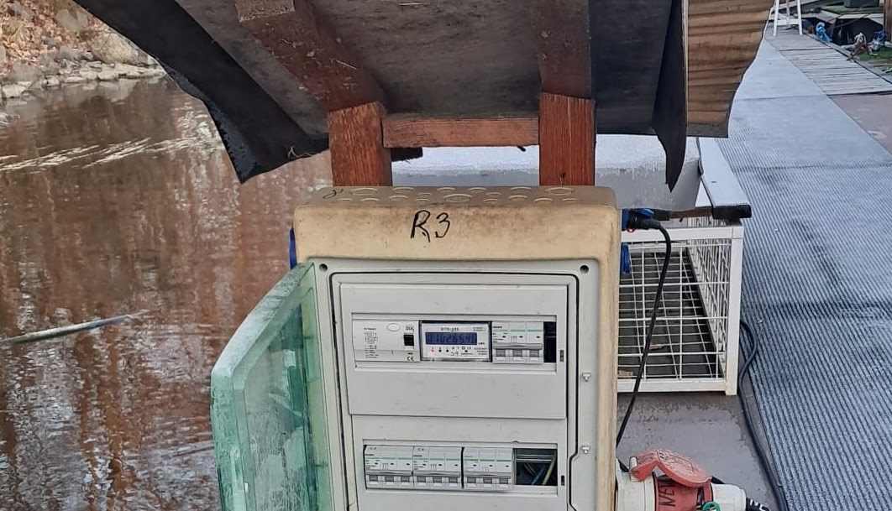

Відключення світла – перша допомога
Якщо ви вмієте діяти на електричній дошці, перевірте панелі, як на цій картинці. Важливо: завжди носіть гумові взуття, коли торкаєтеся будь-якої електричної панелі або приладу!
Дивіться нижче і зв'яжіться з нами у разі потреби!

Червоні позначки показують розташування вимикачів, які потрібно перевірити, чи вони в положенні «вгору».
Спочатку перевірте електричний щиток усередині вашого хаусбота: усі вимикачі мають бути в положенні «вгору».

Всі комутатори повинні бути включені (якщо немає знака, стрічки або чогось незвичайного).

Електричні панелі на доку, схожі на цей. Дехто спиною до спини.

Перевірте ці позиції біля блакитних воріт.

Вони також можуть спотикатися.

На початку парковки перевірте, чи є на номері 9 всі переключачі (


Номер 9 всередині (ви повинні ключ або щось, що обертає квадратний пиг)
Порада: ножицями можна повернути квадратний отвір ручки, щоб відкрити номер 9.
ВАЖЛИВО: після цього завжди зачиняйте дверцята щитка, особливо в дощову погоду.

Ще далі, номер 8 має кілька комутаторів, які також повинні бути включені.
Порада: ножицями можна повернути квадратний отвір ручки, щоб відкрити номер 8.
ВАЖЛИВО: після цього завжди зачиняйте дверцята щитка, особливо в дощову погоду.

Перевірте всередині. Завжди перевіряйте, чи ніхто не працює вниз по течії!
ВАЖЛИВО: БУДЬ ЛАСКА, ПОВІДОМТЕ, ЯКИЙ ВИМИКАЧ НЕ ПРАЦЮЄ. ЗНІМІТЬ ПЕРЕД І ПІСЛЯ.
Порушення світла в будиночних човнах частіше, ніж у квартирах через можливості і більше вимог з-за погоди, особливо в дуже теплі або дуже холодні дні.
Цю сторінку автоматично перекладено з англійського путівника. У разі сумнівів чинною є англійська версія. Англійський оригінал